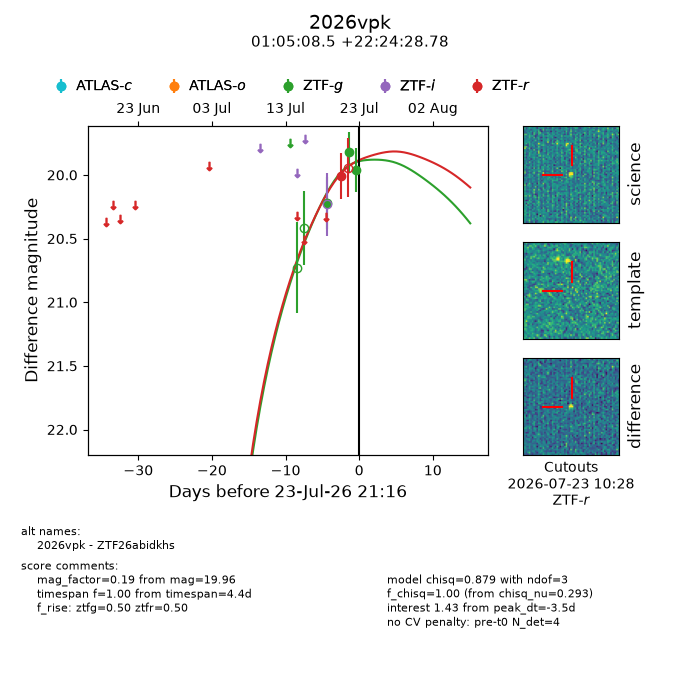
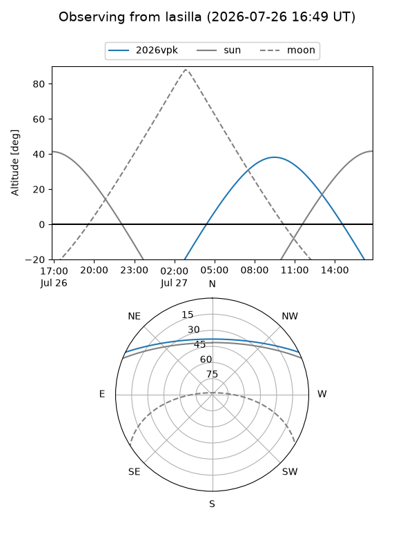
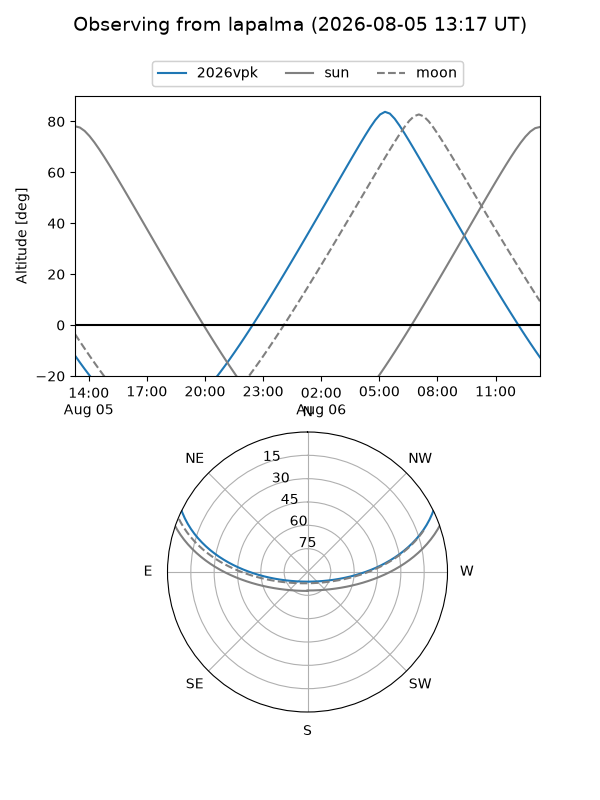
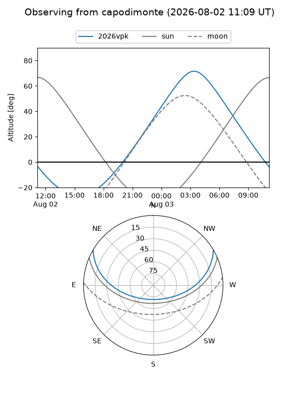
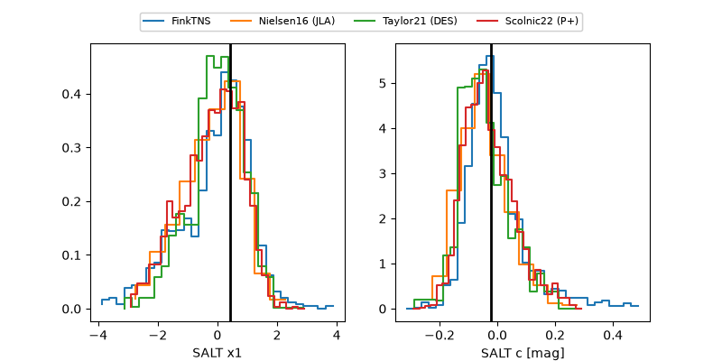

2026vpk
Target 2026vpk at 2026-07-23 21:19
Aliases and brokers:
FINK-ZTF: ztf.fink-portal.org/ZTF26abidkhs
Lasair-ZTF: lasair-ztf.lsst.ac.uk/objects/ZTF26abidkhs
ALeRCE-ZTF: alerce.online/object/ZTF26abidkhs
YSE-PZ: ziggy.ucolick.org/yse/transient_detail/2026vpk
TNS name: wis-tns.org/object/2026vpk
Direct TNS query: direct search
alt names
ZTF26abidkhs (ztf,fink_ztf)
2026vpk (tns,yse)
Coordinates:
equatorial (ra, dec) = 16.2853,+22.40800
equatorial (HMS+DMS) = 01:05:08.47,+22:24:28.78
galactic (l, b) = (127.0891,-40.35312)
Flags:
peak dt: -3.5
Photometry:
last ztfg=19.96, ztfr=20.01
3 ztfg, 1 ztfr detections
Lightcurve

Visibility



Additional plots
